Darwin's Computer


Detail from the only illustration in the Origin of Species (Darwin, 1859)
Detail from the only illustration in the Origin of Species (Darwin, 1859)
| $n$ | #trees | |
| 4 | 15 | enumerable by hand |
| 5 | 105 | enumerable by hand on a rainy day |
| 6 | 945 | enumerable by computer |
| 7 | 10395 | still searchable very quickly on computer |
| 8 | 135135 | about the number of hairs on your head |
| 9 | 2027025 | greater than the population of Auckland |
| 10 | 34459425 | $\approx$ upper limit for exhaustive search |
| 20 | $8.2 \times 10^{21}$ | $\approx$ upper limit of branch-and-bound searching |
| 48 | $3.21 \times 10^{70}$ | $\approx$ the number of particles in the Universe |
| 136 | $2.11 \times 10^{267}$ | number of trees to choose from in the “Out of Africa” data (Vigilant et al. 1991) |
Yang & Rannala (1997), Mau, Newton & Larget (1998)
What we really want is the probability of the tree given the data.
We can compute that from the likelihood using Bayes Theorem:
This is known as the Posterior probability of the tree. Using the Markov chain Monte Carlo algorithm we can produce a sample of trees that have high posterior probability.
This posterior probability distribution was computed using Markov chain Monte Carlo implemented in the BEAST software package (Drummond et al, 2012).
Basic model: (posterior proportional to likelihood × prior)
$$p(T|D) \propto \Pr(D|T) \; p(T)$$Substitution model:
$$p(T,\color{green}{Q}|D) \propto \Pr(D|T,\color{green}{Q}) \; p(T) \; \color{green}{p(Q)}$$Substitution model and tree branching process prior:
$$p(T,\color{green}{Q},\color{blue}{\Theta}|D) \propto \Pr(D|T,\color{green}{Q}) \; p(T|\color{blue}{\Theta}) \; \color{green}{p(Q)} \; \color{blue}{p(\Theta)}$$Modelling phylogenetic data sampled through time
Drummond and Rodrigo (2000), Drummond et al (2002)
Origin of the HIV epidemic in the Americas, Gilbert et al (2007)
A phylogenetic reconstruction of samples of HIV-1 virus. Each tip represents a single infected individual from whom a blood sample has been taken.
Atkinson, Gray and Drummond, 2008, Molecular Biology and Evolution
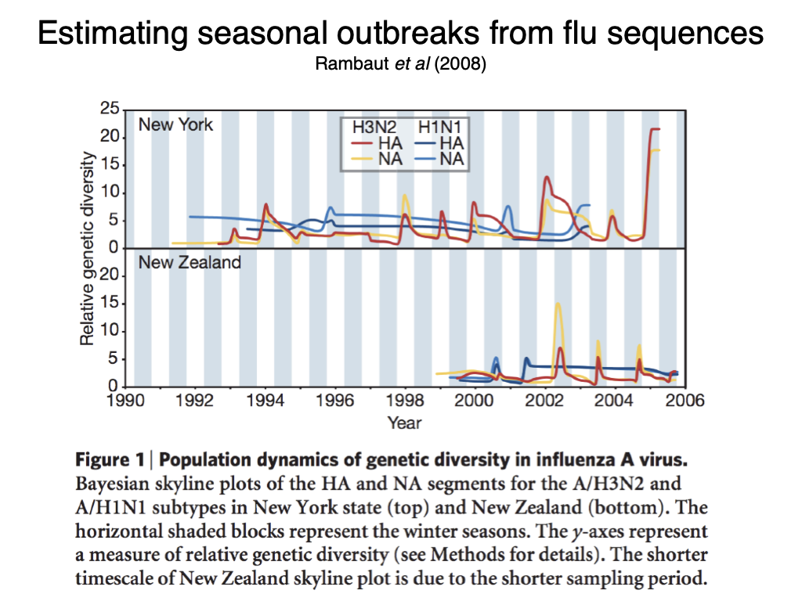
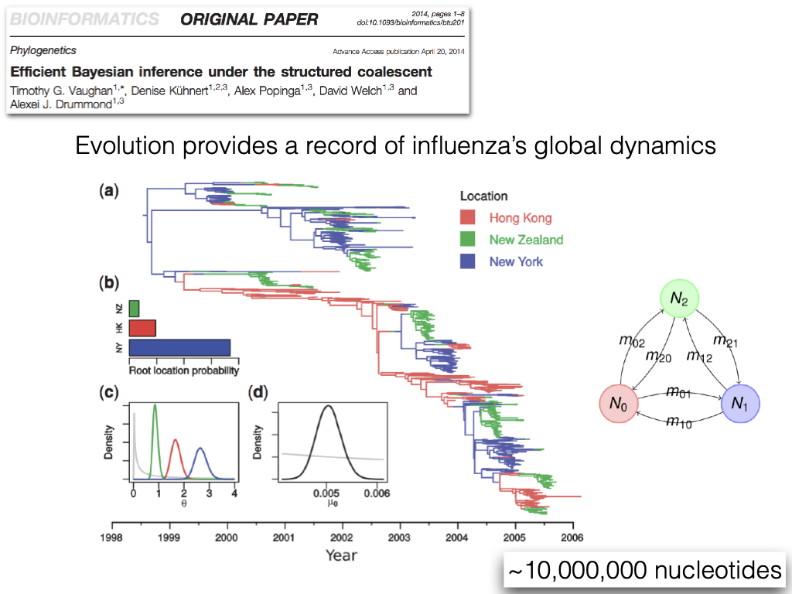
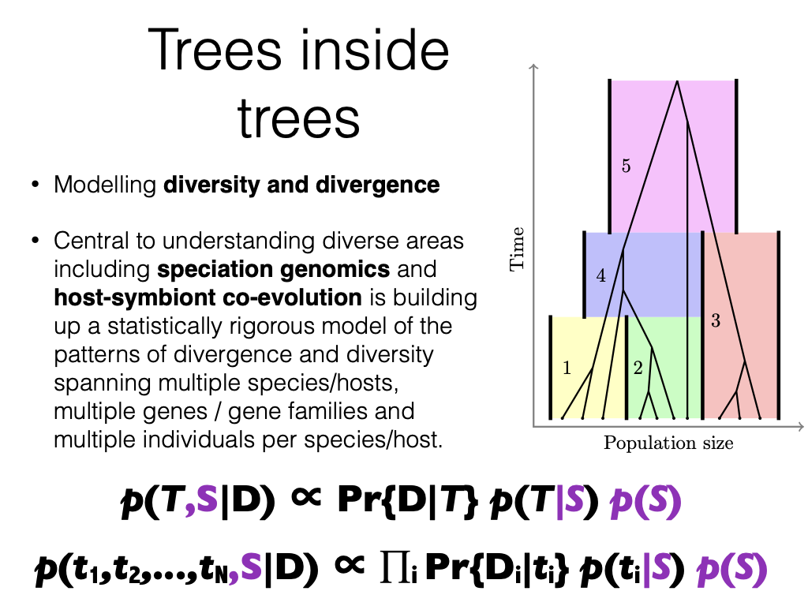
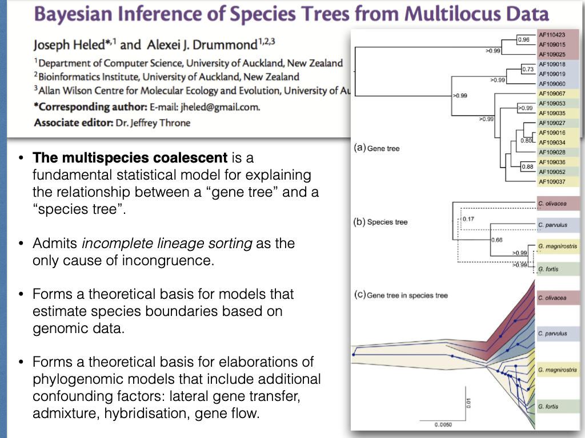
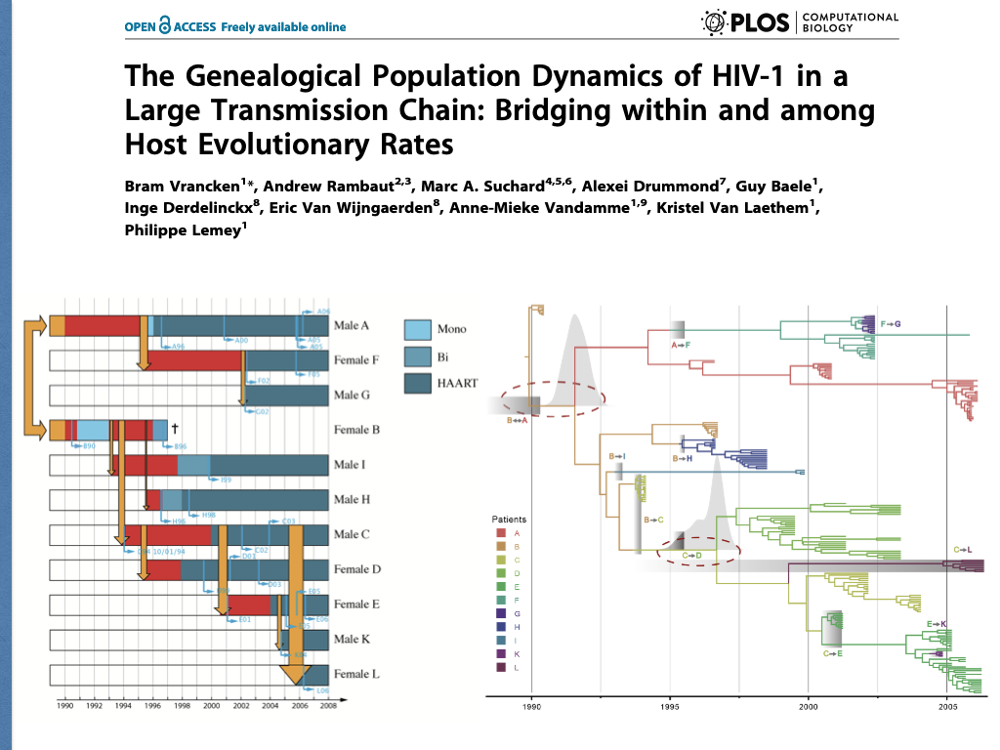
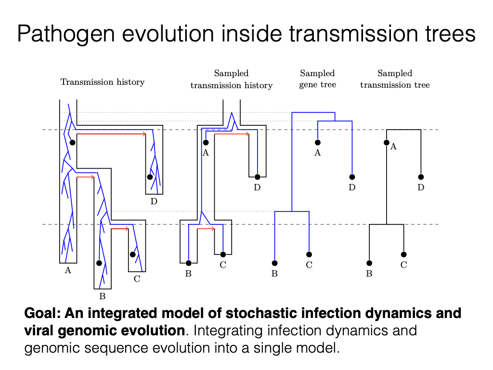
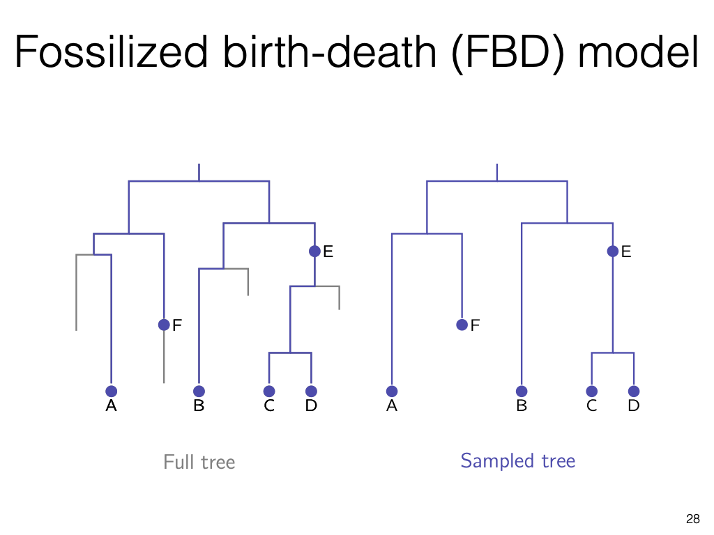
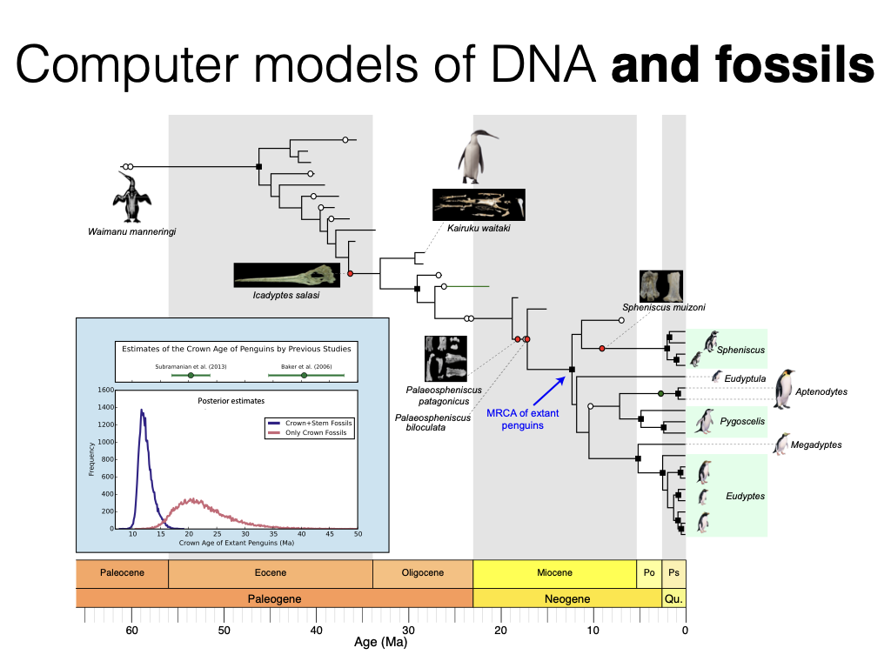
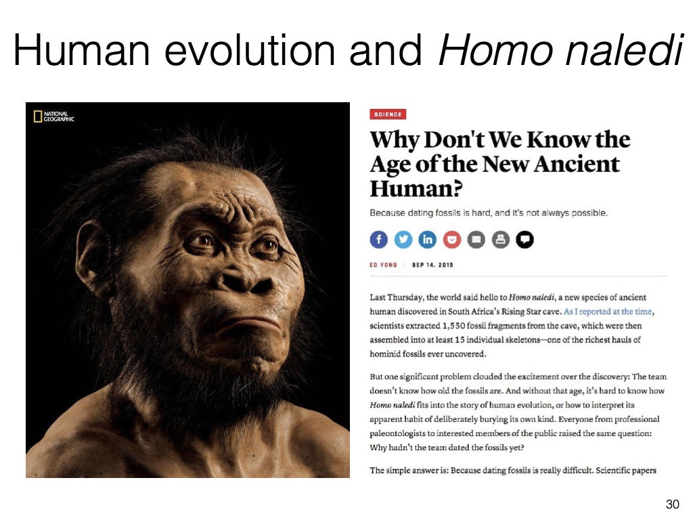
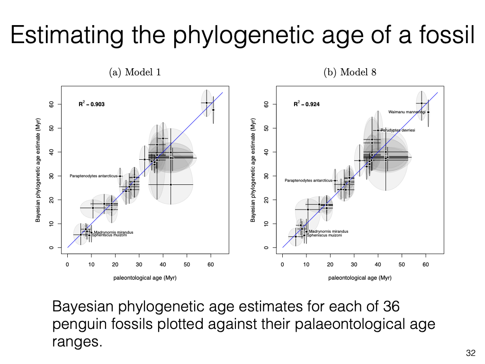
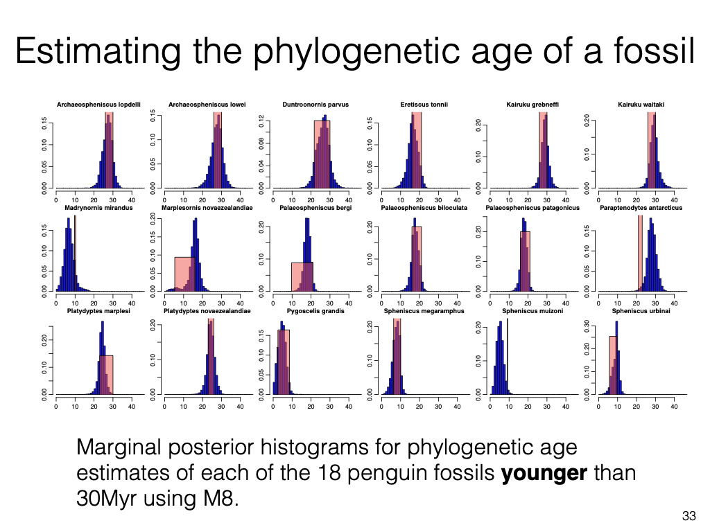
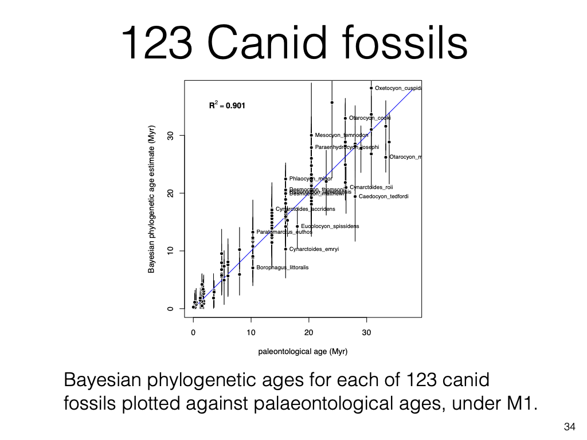
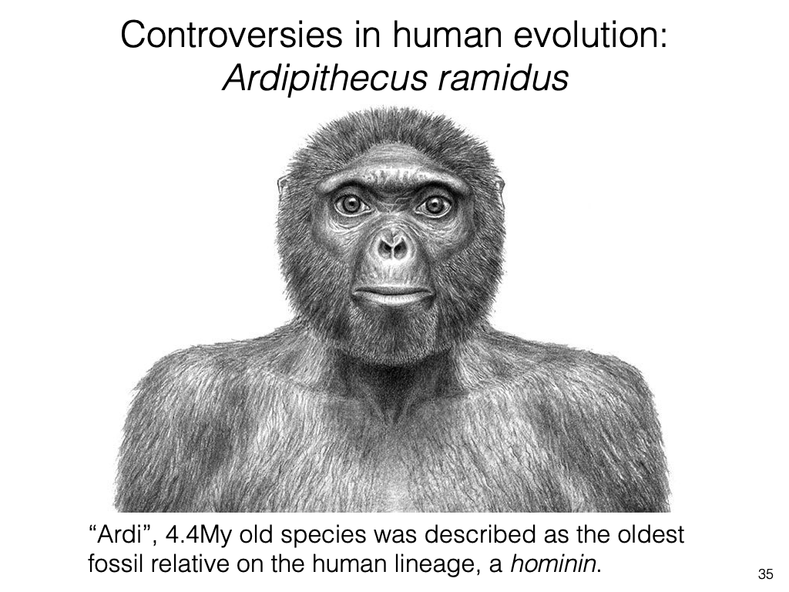
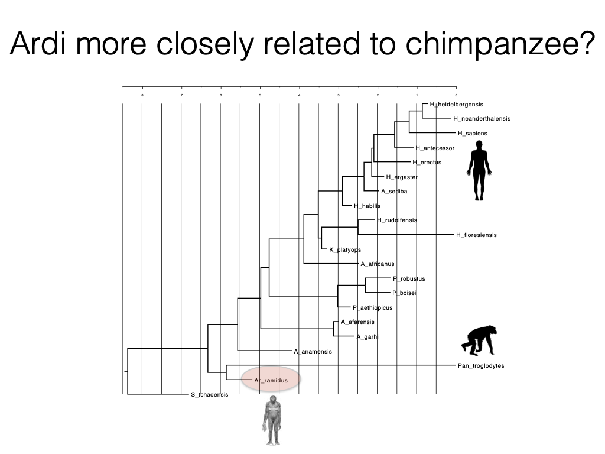